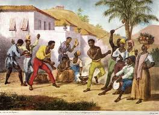

The history of capoeira begins in the sixteenth century, at a time when Brazil was a colony of Portugal. Slave labor was widely used in Brazil, especially in sugar mills in northeastern Brazil. There are many slaves From the region of Angola, also a Portuguese colony. Angolans in Africa do a lot of music and dance.
Abruptly brought to the new American continent, the Africans had to develop forms of protection against the explotation and repression of colonizers. They were targets of violent practices and punishments of senhores de engenho. When they fled from the farms, they were pursued by the captains of the bush, who had a very violent running.
The planters forbade slaves from practicing any kind of struggle. Soon, the slaves used the rhythm and movements of their African dances, adapting to a type of camouflaged struggle. Thus started the capoeira, a martial art disguised as a dance. It was an unprecedented and important instrument of the cultural and physical resistance of the Brazilian slaves.
The practice of capoeira occurred in terreiros near the slave quarters (sheds that served as dormitory for slaves) and had as main functions the maintenance of culture, the relief of work stress and the maintenance of physical health. Often, the fights took place in fields with small shrubs, called in that time as capoeira or capoeirão. From the name of those spaces came the name of the fighting.
Until the year 1930, the practice of capoeira was prohibited in Brazil, because it was seen as a violent and subversive act. The police received instructions to arrest the capoeiristas who practiced this fight. In 1930, an important Brazilian capoeirista, master Bimba, presented / displayed the fight for the then president Getúlio Vargas. The president liked the art so much that it turned it into a Brazilian national sport.
On November 26, 2014, UNESCO (United Nations Educational, Scientific and Cultural Organization) declared the capoeira wheel as an immaterial patrimony of humanity. According to the organization, capoeira represents the struggle and resistance of Brazilian blacks against slavery during the colonial and imperial periods of our history.